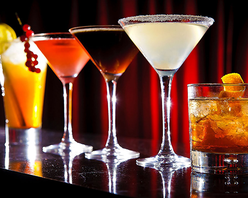
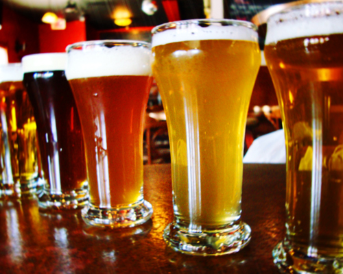

Drinks


Boozy Snowballs
Our delicious gourmet snowballs are made with all natural ingredients. Our homemade syrups are made from organic cane sugar, fruit juices, fruit purees, herbs and spices. We do NOT use high fructose corn syrup or artificial preservatives.
Our snowballs are offered in the flavors listed below, and they are served with a liquor add-in of your choice.
- amaretto sour
- avocado lime
- blackberry
- blackberry lavendar
- blueberry
- blueberry lemonade
- blueberry pomegranate
- canteloupe
- caramel vanilla
- cherry
- cherry vanilla
- chocolate
- chocolate cherry
- chocolate caramel
- chocolate toffee
- cucumber jalapeno
- ginger peach
- green tea vanilla
- hibiscus mint
- iced tea lemonade
- lemonade
- lemon-lime
- maple vanilla
- mango
- mango cilantro
- mango habanero
- mocha
- old fashioned root beer
- peach
- pina colada
- pineapple cilantro
- pineapple jalapeno
- pineapple-orange
- raspberry
- rosemary satsuma
- spearmint
- strawberry
- strawberry basil
- strawberry lemonade
- strawberry raspberry
- watermelon
- watermelon basil
Beer, Wine, and Liquor
Not in the mood for a boozy snowball? You're crazy! Just kidding. Come on in to the Sloppy Snowman anyway, and check out our full bar menu. We have an extensive list of domestic and foreign beers, wines, and liquors, and we also have fresh, house made mixers. We can make pretty much anything your heart desires, and we'll do it with a smile.